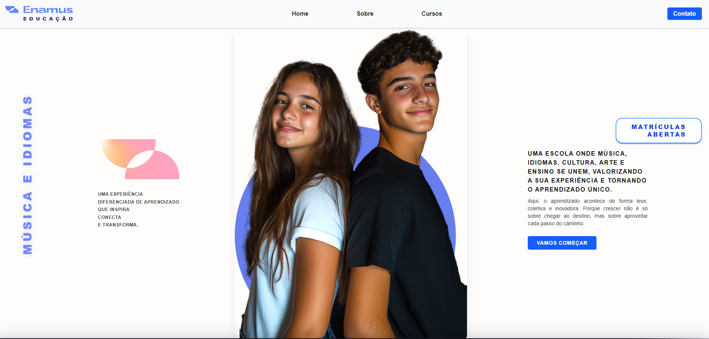
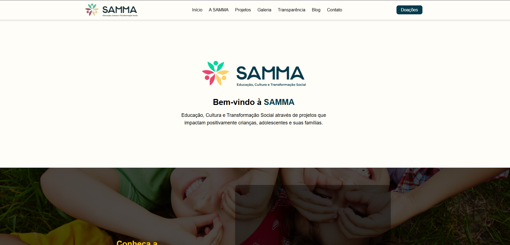
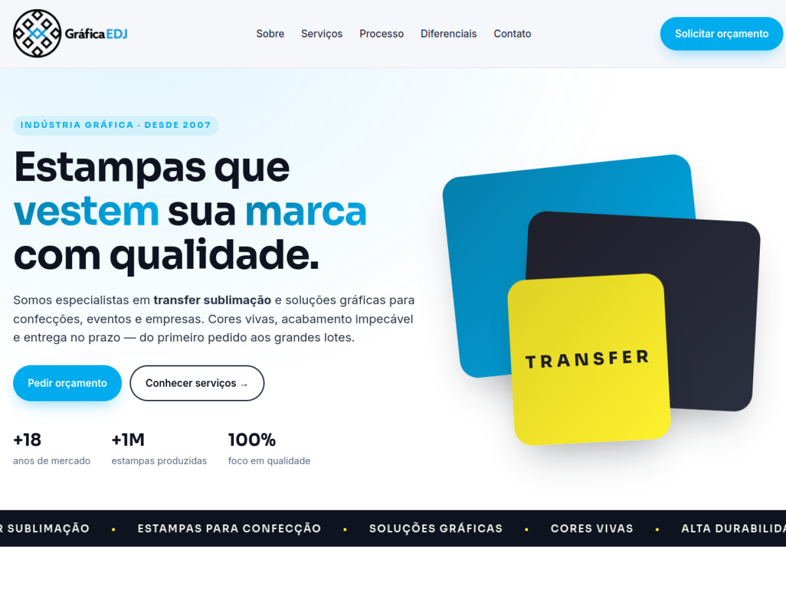
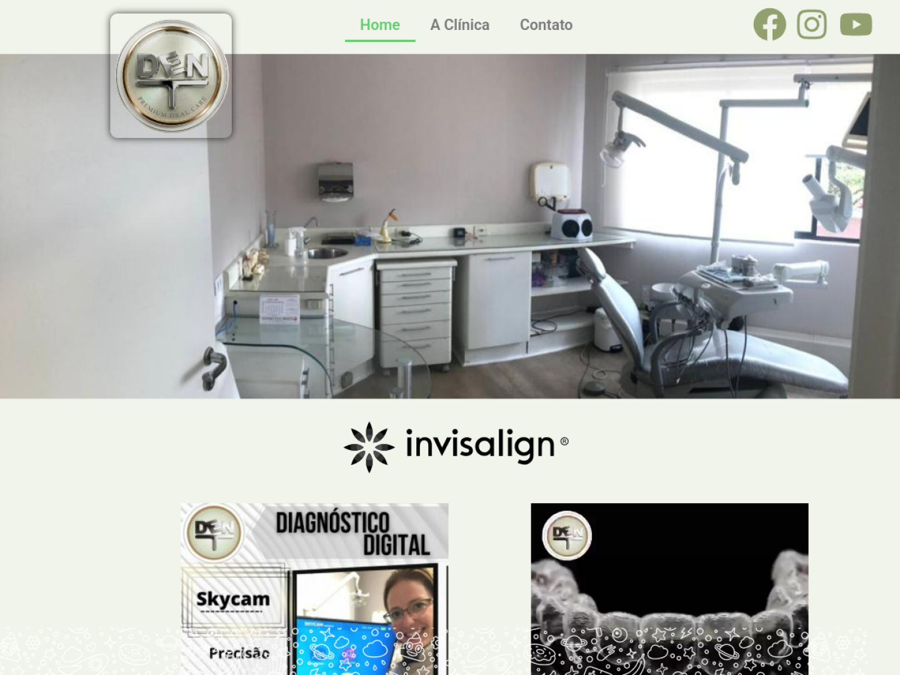

20+ anos de TI na prática
Já vi de tudo — desde micros antigas rodando cliente servidor até redes de clínicas com 10+ computadores. Conheço o problema do pequeno negócio por dentro.
Entrega soluções completas — do primeiro contato com o cliente, passando por infraestrutura, back-end e front-end, até o app publicado na Google Play. Já coloquei no ar 6+ projetos reais usados diariamente por profissionais.
Solucionador de problemas · TI & Dev
Não sou "só técnico" e nem "só programador". Sou as duas coisas — e os projetos que entrego já nascem prontos para o uso real de quem paga a conta.
Comecei em 2004/2005 montando e formatando computadores, criando redes de pequenos negócios, automatizando planilhas e tirando empresas da dependência do "técnico que nunca atende o telefone".
Hoje, esse conhecimento de 20+ anos se junta ao desenvolvimento de software: crio apps mobile multiplataforma com Flutter, sites institucionais, integrações de back-end, sistemas de faturamento e assinatura, publicação na Play Store e toda a parte de LGPD e segurança.
Para o cliente pequeno — estúdio, clínica, ONG, gráfica ou escola — isso significa um único ponto de contato que resolve tudo, sem ficar passando cliente entre 4 fornecedores diferentes.
Você não precisa contratar 1 técnico de TI + 1 dev mobile + 1 dev web + 1 pessoa para publicar na Play. Sou os 4 em um.
Já vi de tudo — desde micros antigas rodando cliente servidor até redes de clínicas com 10+ computadores. Conheço o problema do pequeno negócio por dentro.
Flutter puro com arquitetura limpa, Billing Library 8+, Google Drive backup, LGPD e políticas legais de privacidade/termos. App publicado, não só protótipo.
Sites institucionais, landing pages, formulários com anti-spam, domínios, DNS, hospedagem, integração WhatsApp e métricas. Tudo em um só lugar.
São ferramentas reais usadas diariamente nos meus projetos — sem "experiência em" de cursos que nunca viram produção.
Clique para acessar cada projeto publicado — apps, sites institucionais e projetos para nichos diversos: estética, educação, terceiro setor, saúde e mais.
App de gestão completa para Lash Designers: agenda digital, cadastro de clientes, anamnese, fichas técnicas, histórico de atendimentos, financeiro, galeria de fotos antes/depois e backup em nuvem. Usado diariamente por centenas de profissionais.

Site institucional moderno desenvolvido para a escola Enamus (Música e Idiomas). Reescrita total do site antigo, com foco em captação de alunos, vivências culturais e integração com WhatsApp, formulário de contato anti-spam e SEO.

Projeto institucional para a ONG SAMMA. Site responsivo, acessível e com design intuitivo: integração Instagram, carrossel de parcerias, galeria masonry, formulários protegidos e foco em doações e voluntariado.

Site institucional feito em HTML/CSS/JS puro e leve, sem dependências. Desenvolvido para gráfica com foco no portfólio de serviços, contato via WhatsApp e apresentação profissional do negócio no Google e redes.

Site institucional para clínica odontológica construído em WordPress com Elementor: páginas editáveis pela secretária da clínica sem depender de programador, formulários de contato e estratégia de SEO local.
Uma carreira construída do suporte técnico ao desenvolvimento full-stack & mobile, sempre resolvendo problemas reais de clientes e pequenos negócios.
Projetos web institucionais publicados com domínio próprio, SEO e foco em conversão de leads para clientes de educação, terceiro setor, saúde e serviços.
Habilidades aplicadas: front-end (React, Next.js, Tailwind, TypeScript, HTML5, CSS3, JS), Git, Vercel, Netlify, UX/UI e acessibilidade web.
Responsável pela operação e estabilidade da infraestrutura de TI da obra em regime presencial: servidores, rede, dispositivos e suporte ao time de campo e escritório.
Mais de 2 décadas atendendo clientes em domicílio e empresas: suporte técnico, consultoria, montagem e manutenção de computadores, redes, segurança e sistemas. Em paralelo, estudo contínuo e a transição para o desenvolvimento web e mobile.
Em busca de novos desafios como Técnico de Informática & Desenvolvedor Full-Stack & Mobile — freelas, parcerias, vagas CLT/PJ e projetos de longo prazo com foco em pequenos negócios, saúde, estética, educação e terceiro setor.
3 graduações concluídas na área de tecnologia, pós-graduação em Inteligência Artificial e cursos complementares atualizados constantemente.
Todas concluídas na UNINOVE
Especialização em IA, modelos preditivos, redes neurais, machine learning, mineração de dados e aplicações práticas em cenários reais de negócio.
Formação completa em engenharia de software, banco de dados, gestão de projetos, arquitetura de sistemas, programação orientada a objetos e governança de TI.
Projeto e administração de redes LAN/WAN, roteamento, switching, servidores, segurança, firewall, protocolos TCP/IP e infraestrutura corporativa.
Formação contínua em desenvolvimento
Fundamentos de algoritmos, variáveis, estruturas condicionais, laços de repetição, vetores, matrizes, funções e orientação a objetos.
Bootcamp intensivo com foco em carreira: projetos práticos, stack front-end moderna, portfólio e estratégias para entrar no mercado de tecnologia.
HTML5 semântico, CSS3 moderno (Flexbox, Grid, animações, responsividade), acessibilidade, formulários e boas práticas de web standards.
Formação atualizada 2024: layouts responsivos do zero, design system, CSS custom properties, refatoração, estilos em larga escala e projetos práticos reais.
Formação full-stack completa e contínua: front-end, back-end, banco de dados, testes, deploy, arquitetura, carreira e projetos profissionais guiados.
Se você tem um problema de infraestrutura ou de software (ou os dois) e quer resolver com uma única pessoa — esse sou eu. Clique em qualquer canal abaixo e respondo no mesmo dia.